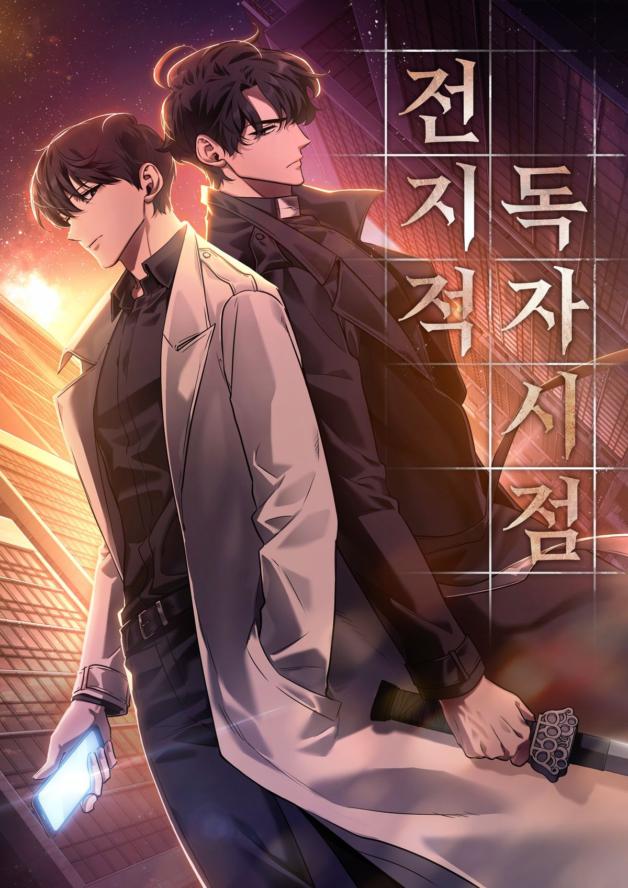

Omniscient Reader's Viewpoint.
Thể loại: Hành động, Phiêu lưu, Kỳ ảo
Mô tả:
Chỉ mình tôi mới biết được kết cục của thế giới này. Vào một ngày nọ, nhân vật chính của chúng ta bị kẹt trong thế giới của bộ tiểu thuyết mà anh ấy yêu thích. Anh ấy sẽ làm gì để sống sót? Khi mà thế giới đó là nơi ngập tràn tai ương và hiểm nguy. Năng lực của anh ấy? Anh ấy biết mọi tình tiết của câu chuyện cho đến kết thúc. Bởi vì anh ấy là độc giả duy nhất của nó. Hãy đọc truyện để biết được anh ấy sống sót như thế nào.
Tóm tắt cốt truyện:
Tóm tắt cốt truyện Toàn Trí Độc Giả (Omniscient Reader’s
Viewpoint):
Kim Dokja là một người bình thường, suốt nhiều năm chỉ sống
bằng việc đọc một tiểu thuyết mạng ít ai quan tâm mang tên Ba
Cách Để Sống Sót Trong Thế Giới Diệt Vong. Vào ngày chương
cuối cùng được đăng, thế giới thực bỗng nhiên biến thành đúng
kịch bản của tiểu thuyết đó: các “kịch bản sinh tồn” tàn khốc
xuất hiện, con người buộc phải hoàn thành thử thách để sống
sót, và những thực thể quyền năng từ bên ngoài quan sát, can
thiệp.
Khác với mọi người, Kim Dokja có lợi thế đặc biệt: cậu là độc
giả duy nhất biết toàn bộ cốt truyện tương lai. Thay vì trở
thành “nhân vật chính”, Dokja chọn cách điều khiển câu chuyện
từ hậu trường, dùng kiến thức của mình để thay đổi các sự kiện
vốn đã được định sẵn.
Trong hành trình sinh tồn, Dokja gặp Yoo Joonghyuk – nhân vật
chính gốc của tiểu thuyết, một người có khả năng quay ngược
thời gian sau mỗi lần thất bại. Hai người vừa hợp tác vừa đối
đầu, dần dần làm lệch hướng cốt truyện ban đầu. Dokja cũng tập
hợp được nhiều đồng đội, mỗi người đều có quá khứ và động cơ
riêng.
Càng tiến xa, Dokja nhận ra rằng:
[...Thế giới này không chỉ là một câu chuyện đơn giản...]
[...Vai trò của độc giả, tác giả và nhân vật gắn chặt với số
phận của thế giới...]
[...Việc thay đổi cốt truyện đòi hỏi phải trả giá rất
lớn...]
Bình luận
Vui lòng đăng nhập để bình luận.